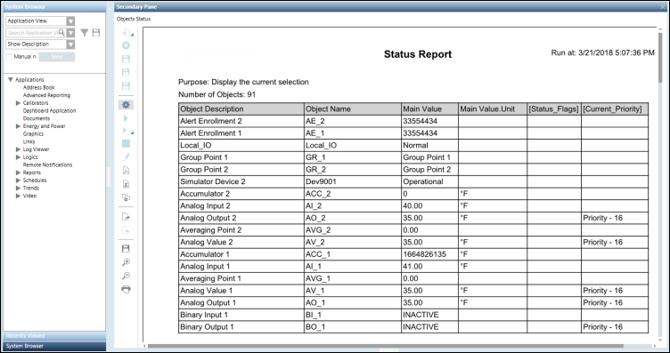
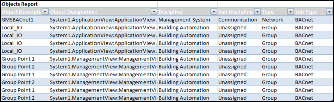

View a Report
Option 1: Viewing a Report Definition as a PDF
- For viewing a report definition as a PDF, click Create and view PDF
 .
.
- The PDF file opens in the PDF viewer. When a PDF document exceeds the page limit of 500 pages, it splits into two documents.
You can save, print, zoom in, and zoom out of the PDF file.

Option 2: Viewing a Report Definition in the Excel format
- For viewing a report definition in the Excel format without a template, click Create and view Excel
 .
.
NOTE: Ensure that Microsoft Excel 2007 or later is installed, for Create and view Excel to be enabled.
- An Excel file is created and stored under the following temporary path [Drive]:\Users\[UserID]\AppData\Local\Temp\temp\GMS.
A dialog box displays, asks you if you want to save a permanent copy of this file.

To view a report in the Excel with a template, see Viewing a Report Definition in the Excel format with a template.